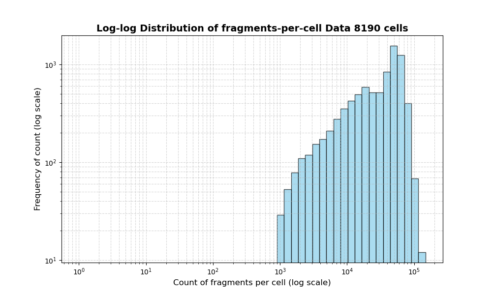
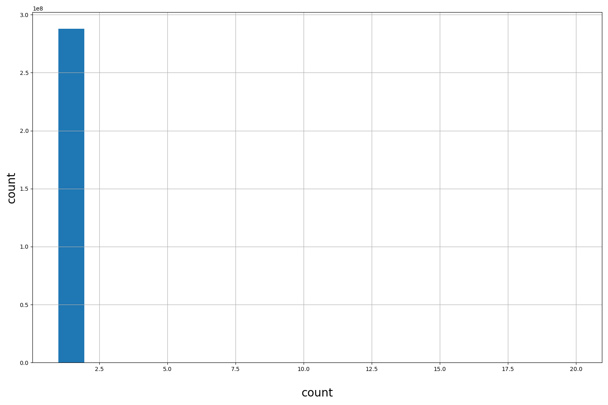

Resource
| Id | summary/johansen2025Crossspecies/atac_fragments/macaque/990e8143345a648b1f163b3de552db329db9ac9d |
|---|---|
| Type | fragment_score |
| Version | 0 |
| Summary |
ATAC fragments for macaque from library 990e8143345a648b1f163b3de552db329db9ac9d
|
| Description | |
| Labels |
|
Scores (2)
| ID | Type | Default annotation | Description | Histogram | Range |
|---|---|---|---|---|---|
| cell | str |
cell |
 |
AGGTTGCGTTGGTGAC-1, GTACTTAAGCATCCAG-1, ATGTAAGCAATAACCT-1, ACCCGGTAGTAGCCAT-1, TGAAGTGAGGCGAATA-1 (top 5 of 8190 values) | |
| count | int |
count |
 |
[1, 1] |
Fragments
not computed
Files
| Filename | Size | md5 |
|---|---|---|
| 990e8143345a648b1f163b3de552db329db9ac9d.gz | 2.69 GB | b25f3a2a2054020011f9180ac96f3a6e |
| 990e8143345a648b1f163b3de552db329db9ac9d.gz.tbi | 1.19 MB | cb1f4c771fe2c94d5c76453caf849028 |
| fragment_count_dist_plot.py | 853.0 B | 9d735ee8c687286d50484e7f1e398e60 |
| genomic_resource.yaml | 1.42 KB | 6463ea6b94a48ad75c24a5e710a0f571 |
| statistics/ |